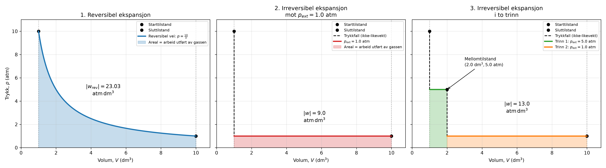

Uke 4 – Makroskopisk termodynamikk#
Diskusjonsoppgaver#
Ettersom en av gruppetimene forrige uke ble avlyst vil vi bruke denne uken til å gjøre oss ferdig med tidligere diskusjonsoppgaver, og vi kobinerer litt diskusjon-og regneoppgavene denne uken. I diskusjonstimen, prioriter å bli ferdig med forrige ukes diskusjonsoppgaver, og gå så videre på denne ukens regneoppgaver.
Diskusjon/Regneoppgaver#
Oppgave 1#
a) Mikroskopisk, hva vil det si at et system er i likevekt når vi snakker om arbeid?
Svar Mikroskopisk betyr likevekt at molekylene fortsatt beveger seg tilfeldig og kolliderer hele tiden, men at det ikke finnes noen netto, makroskopisk endring i systemet. Dette innebærer blant annet at:
Temperatur er jevnt fordelt i gassen, Tetthet og trykk er jevnt fordelt, bortsett fra svært små og raske fluktuasjoner, Det er ingen netto strømning av gass i én bestemt retning.
b) Forklar hvordan reversibilitet og likevekt henger sammen.
Svar For at en prosess skal være reversibel, må den gjøres så sakte at systemet til enhver tid rekker å opprette likevekt. Dette betyr egentlig at prosessen må gjøres uendelig sakte, eller sagt på en annen måte at hvert trinn er en så liten endring at vi er uendelig nærme en likevekt.
Vi ser på en ideell gass som ekspanderer isotermt ved temperaturen \(T=300 K\) fra en begynnelsestilstand med trykk \(p_1 = 10.0\) atm og volum \(V_1 = 1.0 \text{dm}^3\) til en slutt-tilstand hvor trykket er \(p_2 = 1.0\) atm og volumet er \(V_2 = 10.0 \text{dm}^3\). Prosessen skjer på 3 ulike måter:
Reversibelt
Irreversibelt mot et konstant ytre trykk på \(1\) atm
I to trinn: først irreversibelt mot konstant ytre trykk på \(5.0\) atm frem til trykket i gassen er \(p_{midtveis} = 5.0\) atm og volumet er \(V_{midtveis} = 2.0 \text{dm}^3\), deretter til slutt-tilstanden under et konstant ytre trykk på \(1.0\) atm.
c) Beregn arbeidet \(w\) i de tre tilfellene.
Svar For en reversibel ekspansjon endrer vi volumet infinetesimalt sakte, slik at trykket i gassen til enhver tid er lik det eksterne trykket \(p_{gass}=p_{ex}\). Arbeided er da gitt av integralet: 1. Reversibel ekspansjon $\( w=-\int_{V_1}^{V_2} p dV \)$
Vi bruker idealgassloven og setter in at \(p=\frac{nRT}{V}\), får vi:
siden vi har en idealgass så har vi at \(nRT=pV\) og dermed \(nRT=10 \mathrm{atm} \cdot 1 \text{dm}^3 = 10\ \text{atm} \ \text{dm}^3 \)
Da blir det reversible arbeidet:
2. Irreversibel ekspansjon mot konstant ytre trykk
Ved en irreversibel ekspansjon er det det ytre trykket som bestemmer arbeidet:
Her er det ytre trykket konstant:
Volumendringen er
Dermed blir arbeidet
3. Irreversibel ekspansjon i to trinn
Prosessen deles i to irreversible ekspansjoner. For hvert trinn bruker vi
Trinn 1: Fra \(V_1=1.0\ \mathrm{dm^3}\) til \(V_{\mathrm{midtveis}}=2.0\ \mathrm{dm^3}\)
Det ytre trykket er
Volumendringen er
Arbeidet i første trinn blir derfor
Trinn 2: Fra \(V_{\mathrm{midtveis}}=2.0\ \mathrm{dm^3}\) til \(V_2=10.0\ \mathrm{dm^3}\)
Det ytre trykket er nå
Volumendringen er
Arbeidet i andre trinn blir
Det totale arbeidet er summen av arbeidene i de to trinnene:
d) Tegn pV-diagrammer hvor dere markerer de arealene som svarer til det utførte arbeidet for alle tre tilfellene.
Svar

e) Hva er det maksimale arbeidet denne prosessen kan gi?
Svar Det maksimale arbeidet får vi ved reversibel ekspansjon, noe som gir at \(w_{max}=w_{reversibel}== - 23.03 \ \text{atm} \ \text{dm}^3 = -2.33\ \text{J}\)
f) Hva er endringen i entropi til gassen (systemet) for de 3 alternativene i oppgave a, forventer vi at gassekspansjonen er sannsynlig?
Svar Entropienendringen til gassen er ikke avhengig av veien, siden det er en tilstandsvariabel hvor det kun er start og sluttilstand som spiller en rolle. Detmed kan vi allerede nå si at entropiendringen til gassen er lik i alle tre tilfellene, og vi kan regne den ut ved å se på den reversible prosessen:
Svar Entropienendringen til gassen er ikke avhengig av veien, siden det er en tilstandsvariabel hvor det kun er start og sluttilstand som spiller en rolle. Detmed kan vi allerede nå si at entropiendringen til gassen er lik i alle tre tilfellene, og vi kan regne den ut ved å se på den reversible prosessen:
Siden prosessen er isoterm og reversibel har vi at \(\Delta U=q_{rev}+w_{rev}=0\) og dermed at \(q_{rev}=-w_{rev}\)
Fra oppgaven over vet vi at
som gir oss:
Siden idealgassloven gir
kan vi skrive
Vi setter inn verdiene:
Vi bruker omregningen
og får
Dermed er entropiendringen for gassen i alle tre tilfellene
Entropien er altså positiv og dermed kan vi forvente at prosessen er sannsynlig. At utviding av gass er sansynlig har vi også sett fra et makroskopisk perspektiv der molekylene får flere tilgjengelige mikroskopiske tilstander, altså flere måter å fordele seg i rommet på.
Når volumet øker, øker antallet mikrostater \(\Omega\), og derfor øker entropien. Ekspansjonen er dermed sannsynlig, mens den motsatte prosessen, at gassen spontant samler seg tilbake i det lille startvolumet, er ekstremt usannsynlig.
g) Hva er endrinen i entropi til omgivelsene for de 3 tilfellene, og hva er den totale entropiendringen \(\Delta S_{tot}=\Delta S_{system}+\Delta S_{omgivelser}\) for de tre prosessene.
Svar Entropiendringen til omgivelsene er gitt av varmen som blir avgitt til gassen (systemet), altså:
Siden vi ser på isoterm ekspansjon er den indre energien til gassen konstant:
Fra første lov følger derfor
Det betyr at varmen gassen mottar fra omgivelsene er like stor som arbeidet gassen utfører på omgivelsene. Gassen må ta opp varme fra omgivelsene for å erstatte energien den avgir som arbeid og dermed beholde konstant temperatur.
Siden omgivelsene har temperaturen \(T=300\ \mathrm{K}\), får vi
Fra oppgave f) har vi for alle prosessene:
Hva er entropien for omgivelsene for de tree prosessene:
1. Reversibel ekspansjon
Arbeidet var
Dermed er
Total entropiendring blir
Dette er forventet for en reversibel prosess.
2. Irreversibel ekspansjon i ett trinn
Arbeidet var
Dermed:
Den totale entropiendringen blir
3. Irreversibel ekspansjon i to trinn
Arbeidet var
Dermed:
Den totale entropiendringen blir
Prosess |
\(\Delta S_{\mathrm{system}}\) |
\(\Delta S_{\mathrm{omgivelser}}\) |
\(\Delta S_{\mathrm{tot}}\) |
|---|---|---|---|
Reversibel |
\(+7.78\ \mathrm{J\,K^{-1}}\) |
\(-7.78\ \mathrm{J\,K^{-1}}\) |
\(0\) |
Irreversibel, ett trinn |
\(+7.78\ \mathrm{J\,K^{-1}}\) |
\(-3.04\ \mathrm{J\,K^{-1}}\) |
\(+4.74\ \mathrm{J\,K^{-1}}\) |
Irreversibel, to trinn |
\(+7.78\ \mathrm{J\,K^{-1}}\) |
\(-4.39\ \mathrm{J\,K^{-1}}\) |
\(+3.39\ \mathrm{J\,K^{-1}}\) |
De irreversible prosessene gir positiv total entropiendring. To-trinnsprosessen er mindre irreversibel enn ekspansjonen i ett trinn, fordi den gir mer arbeid og dermed krever mer varme fra omgivelsene. Den reversible prosessen gir maksimalt arbeid og ingen endring i totalentropi.
h) Hva forventer skjer med arbeided og den totale entropien, om gjør prosessen i flere trinn, der vi lar likevekt stille seg inn mellom hvert trinn? Hva skjer nå antall trin går mot uendelig?
Svar Når ekspansjonen deles opp i flere trinn, blir forskjellen mellom gasstrykket og det ytre trykket mindre i hvert trinn. Prosessen blir dermed mindre irreversibel.
Arbeidet gassen utfører på omgivelsene øker i størrelse for hvert ekstra trinn:
Samtidig blir den totale entropiendringen mindre:
Når antall trinn går mot uendelig, blir trykkforskjellen i hvert trinn infinitesimal. Systemet rekker da å innstille seg til likevekt mellom hvert trinn, og prosessen nærmer seg en reversibel isoterm ekspansjon:
Den reversible prosessen gir altså maksimalt arbeid ut fra gassen og ingen økning i totalentropi. Husk reversible prosesser er en idealisering av virkeligheten og er i praksis ikke er mulig.
Oppgave 2#
a) Hva er varmekapasitet generelt, og hvordan inngår den i forholdet mellom tilførsel av varme og endring i temperatur?
Svar Generelt så angir varmekapasiteten \(C\), hvor mye varme som må tilføres et system for å øke temperaturen en gitt mengde.
Dette kan vi skrive som:
For en liten temperaturendring gjelder derfor
Dersom varmekapasiteten er tilnærmet konstant i temperaturintervallet, kan vi integrere og få
Men det er viktig å huske på at varmekapasiteten avhenger av prosessen. For eksempel er \(C_V\) varmekapasiteten ved konstant volum, mens \(C_p\) er varmekapasiteten ved konstant trykk, og de trenger ikke være like.
b) Fra definisjonene av indre energi (U) og entalpi (H), og generell varmekapasitet utled uttrykk for varmekapasitet ved konstant volum og konstant trykk.
Svar Termodynamikkens første lov er
For reversibel ekspansjon gjelder
slik at
Konstant volum
Ved konstant volum er
Da utføres det ikke volumarbeid, og vi får
Siden varmekapasiteten generelt er definert som
blir varmekapasiteten ved konstant volum
Konstant trykk
Entalpi defineres som
Differensiering gir
Setter vi inn uttrykket for \(dU\), får vi
Ved konstant trykk er
og dermed
Varmekapasiteten ved konstant trykk blir derfor
c) For en idealgass, hva er relasjonen mellom varmekapasitetene ved henholdsvis konstant trykk og volum?
Svar For en idealgass har vi:
Siden entalpi er definert som
kan vi skrive
For en idealgass avhenger den indre energien bare av temperaturen:
Deriverer vi uttrykket for entalpi med hensyn på temperatur, får vi
Siden
får vi
For molare varmekapasiteter blir relasjonen
Her er \(R=8.314\ \mathrm{J\,mol^{-1}\,K^{-1}}\). Relasjonen gjelder for en idealgass og konstant stoffmengde.
I et eksperiment måler vi at når energien \(187 J\) tilføres som varme til \(1.9\) mol gassmolekyler ved konstant trykk, øker prøvens temperatur med \(1,78 K\).
d) Regn ut de molare varmekapasitetene for gassen ved hhv konstant volum og konstant trykk.
Svar Ved konstant trykk (\(C_{p,m}\)):
Ved konstant trykk er tilført varme lik entalpiendringen: \(q_p = \Delta H = n\,C_{p,m}\,\Delta T\). Løser for \(C_{p,m}\):
Ved konstant volum (\(C_{V,m}\))
Vi har ikke et eget forsøk ved konstant volum, men for en ideell gass gjelder relasjonen fra b): \(C_{p,m} - C_{V,m} = R\). Derfor:
(Til orientering: disse verdiene er høyere enn for enatomige eller toatomige gasser, så dette er trolig en fleratomig gass med mange aktive frihetsgrader.)
e) Når trykket er konstant, hvor mye av energien går med til arbeid i form av volumendring?
Svar Ved konstant trykk går noe av den tilførte varmen til å øke den indre energien, mens resten går til ekspansjonsarbeid.
For en idealgass er arbeidet utført av gassen
Vi setter inn verdiene:
Dermed går \(28{,}1\ \mathrm{J}\) av den tilførte energien til arbeid i form av volumendring.
Oppgave 3#
Vi skal nå se på oppvarmingen av et stoff fra væske-fase til gass-fase, og hvordan entalpi, indre energi, arbeid og varme avhenger av de ulike delprosessene. Vi antar at vi har \(2\) mol av stoffet, og at de følgende størrelsene gjelder:
a) Væsken varmes fra \(25\,^\circ\text{C}\) og ved konstant trykk (\(1\text{atm}\)) til den når \(100\,^\circ\text{C}\) (men fortsatt er i væske-fase). Beregn \(q, w, \Delta U og \Delta H\). Anta at volumendringen i væskefasen er neglisjerbar.
Svar
Vi begynner med å se hvilke sammenhenger vi kan bruke ut fra de gitte opplysningene/begrensningene. Vi vet at trykket er konstant, og siden vi antar at volumendringen i væskefasen er neglisjerbar har vi ikke noe ekspansjonsarbeid.
Dermed har vi at \(w=0\), \(\Delta U = q + w = q\), og fra definisjonen av entalpi: \(q_p = \Delta H = \Delta U\).
Det eneste vi trenger å regne ut er derfor
b) Vi antar at oppvarmingen finner sted i en åpen beholder på laben, og at gassen kan sees på som tilnærmet ideell. Ved \(100\,^\circ\text{C}\) koker væsken fullstendig til en gass. Finn ekspansjonsarbeidet gassen utøver på omgivelsene, samt \(q_{vap}, \Delta U og \Delta H_{vap}\)
Hint:
Gassen vil ekspandere til den når det samme trykket som den ekspanderer mot. Antar her at \(p_{ex}=1\text{atm}\).
Svar For å finne ekspansjonsarbeidet må vi først finne volumendringen. Vi bruker da antakelsen om at gassen er ideell, setter \(V_i = 0\) (ingen gass til å begynne med), og finner \(V_f\) ved å bruke den ideelle gasslikningen (vi velger da en gasskonstant med enheter som gjør regningen lettere )
Siden gassen ekspanderer mot et konstant ytre trykk bruker vi \(w = -p_{ex}\Delta V\) til å finne arbeidet:
Bruker $\(1 \text{L atm} = 101.32 \text{J}\)$
Ekspansjonsarbeidet som blir gort på omgivelsene er derfor \(w\approx 6.2 \text{kJ}\).
Gitt \(\Delta_{vap}H_m\,^\circ = 40.7 \text{kJ/mol}\) finner vi \(\Delta_{vap}H\,^\circ = 40.7 \text{kJ/mol} \cdot 2 \text{mol} = 81.4 \text{kJ}\).
c) Anta nå at vi kan “fange” gassen i en lukket beholder og varme den videre opp til den når \(130\,^\circ\text{C}\). Beregn \(q, w, \Delta U og \Delta H\).
Volumet er nå konstant, så igjen har vi ikke noe ekspansjonsarbeid, og \(w=0\).
Vi har også at \(q_V = \Delta U \) og \(q_v = C_V\Delta T\).
I oppgaveteksten har vi kun fått oppgitt \(C_{p,m(g)}\), og vi må bruke \(C_{p,m}-C_{V,m} = R\) for å finne \(C_{V,m}\).
Eventuelt kan vi finne entalpiendringen direkte ved \(\Delta H = nC_{p,m}\Delta T = 2 \text{mol}\cdot \frac{7}{2}R \cdot 30 \text{K} = 1746 \text{J}\).
Oppgave 4#
a) Et kalorimeter kan være åpent eller lukket. Hva menes med dette og hva er forskjellen på disse målingsprinsippene termodynamisk sett?
Svar Et åpent kalorimeter har konstant trykk, og varmen man måler er dermed entalpiforandringen \(𝛥𝐻 = 𝑞𝑝\). Et lukket kalorimeter har konstant volum. Konstant volum gir at varmeoverføringen som skjer i kalorimeteret gir endringen i indre energi, \(𝛥𝑈 = 𝑞𝑉\).
I et bombekalorimeter forbrennes \(0,1328\) g sukrose, \(C_{12}H_{22}O_{11}\)(s) fullstendig ved \(25\,^\circ\) C og avgitt varme måles til \(2186,0\) J.
\(\Delta_fH^\circ (CO_2(\text{g}))=-393.52 \text{kJ/mol}\) og \(\Delta_fH^\circ (H_2O(\text{l}))=-285.832 \text{kJ/mol}\).
b) Skriv fullstendig reaksjonslikning for prosessen
Svar
c) Finn \(\Delta_cU_m^\circ\) og \(\Delta_cH_m^\circ\) for forbrenning av sukrose.
Siden volumet er konstant har vi ikke noe ekspansjonsarbeid (\(\Delta U = q+w=q\)), og siden varme avgis til bombekalorimeteret må fortegnet være negativt for reaksjonen.
Den molare massen til sukrose er \(M_{sukrose}=342.3\text{g/mol}\), og \(\Delta_cU_m^\circ\) blir da
Fra definisjonen av entalpiendringen til en ideell gass har vi at
Siden \(\Delta n_{gas} = 12 \text{mol}-12 \text{mol}=0\), får vi
d) Beregn standard molar dannelsesentalpi, \(\Delta_fH_m^\circ\) for sukrose.
Svar
Oppgave 5#
a) Hva sier Hess’ lov?
Svar Hess lov sier at dersom vi deler en prosess for et system opp i del-prosesser, så er entalpiendringen for systemet lik summen av entalpiendringene for delprosessene.
b) Hvorfor er det nødvendig at entalpi er en tilstandsfunksjon for at loven skal være gyldig?
Svar Tilstandsfunksjoner er uavhengige av veien mellom start- og slutttilstand. Det å dele prosessen opp i delprosesser svarer til å endre veien, men så lenge start- og sluttilstanden er de samme vil entalpiendringen være den samme.
c) Fra følgende data, bestem \(\Delta_fH\,^\circ\) for diboran (\(B_2H_6\)(g)) ved \(298\) K:
nr. |
Reaksjon |
\(\Delta_rH\,^\circ [\text{kJ/mol}]\) |
|---|---|---|
1 |
\(B_2H_6(g)+3O_2(g) \to B_2O_3(s)+3H_2O(g)\) |
\( -2036 \) |
2 |
\(2B(s) + \frac{3}{2}O_2(g) \to B_2O_3(s)\) |
\(-1274\) |
3 |
\(H_2(g) + \frac{1}{2}O_2(g) \to H_2O(g)\) |
\(-241.8\) |
Svar
Vi ønsker å finne \(\Delta_f H_m^\circ\) for dannelsesreaksjonen
Skriver del-reaksjonene over slik at vi kan summere de for å få dannelsesreaksjonen:
nr. |
Reaksjon |
|---|---|
\(2\) |
\(2B(s) + \frac{3}{2}O_2(g) \to B_2O_3(s)\) |
\(3\cdot 3\) |
\(3\cdot\left[H_2(g) + \frac{1}{2}O_2(g) \to H_2O(g)\right]\) |
\(1\cdot (-1)\) |
\(B_2O_3(s)+3H_2O(g) \to B_2H_6(g)+3O_2(g) \) |
Summeres venstre ledd i reaksjonene og høyre ledd i reaksjonene får man dannelsesreaksjonen. I følge Hess’ lov får vi da
Oppgave 6#
En jernbit blir plassert i kontakt med en aluminiumskloss. Begge har et volum på \(50 cm^3\). Temperaturen til jernbiten har er \(0^{\circ}C\) og aluminiumsklossen \(100^{\circ}C\). De to klossene settes inntil hverandre slik at de er i termisk kontakt, og likevekt innstiller seg. Anta at systemet er termisk isolert.
\(C_{p,m}= 25.10 J K^{-1} mol^{-1}\) for jern og \(C_{p,m}= 24.4 J K^{-1} mol^{-1}\) for aluminium. Tetthetene er henholdsvis \(2.698 g cm^{-3}\) og \(7.874 g cm^{-3}\) for aluminium og jern.
a) Finn slutt-temperaturen når termisk likevekt er nådd.
Svar Først må vi finne stoffmengdene:
\(M_\text{Al} = 26.98\), \(M_\text{Fe} = 55.85\ \text{g/mol}\).
Det er verdt å legge merke til: samme volum, men jernbiten inneholder over 40 % flere mol. Det kommer til å trekke slutt-temperaturen mot jernets startverdi.
Siden trykket er konstant har vi \(\Delta H = q_p\). Ved termisk likevekt vil det ikke lenger overføres noen netto varme mellom systemene, så \(\Delta q_p=0=q_{p,Al}-q_{p,Fe}\).
Fra definisjonen av varmekapasitet har vi også \(\Delta H = n\cdot C_{p,m} \cdot \Delta T\), dermed får vi
Løser for \(T_f\):
Regner ut de to varmekapasitetene (total, \(nC_{p,m}\)):
Slutt-temperaturen ligger noe nærmere jernets 0 °C enn midtpunktet (50 °C). Dette kommer av at jernets totale varmekapasiteten er større enn aluminiums.
b) Beregn \(\Delta S\) for hver av de to klossene, og for de to klossene til sammen.
Svar
Aluminium (avkjøles, \(373.15 \to 313.9\)):
Jern (varmes opp, \(273.15 \to 313.9\)):
Til sammen:
c) Kommenter kort fortegnene til de tre entropi-endringene som er beregnet.
Svar
Samme mønster som i del 1: aluminiumet (avkjøles) taper entropi, jernet (varmes opp) vinner entropi.
Totalen er igjen positiv. Selv om aluminiumet og jernet utveksler nøyaktig like mye varme, tar jernet opp denne varmen ved lavere temperatur enn aluminiumet avgir den, og siden entropibidraget \(q/T\) er størst der \(T\) er lav, blir jernets gevinst større enn aluminiumets tap.
\(\Delta S_\text{tot} > 0\) bekrefter at varmeutjevningen er en spontan, irreversibel prosess. Så snart de to bitene har samme temperatur, stopper netto varmestrøm. systemet har nådd termisk likevekt, den tilstanden med flest tilgjengelige mikrotilstander.
Oppgave 7#
Varmekapasiteten ved konstant trykk for en prøve av en ideell gass varierer med temperaturen som følger
Regn ut q, w, \(\Delta U\) og \(\Delta H\) når temperaturen øker fra \(0\,^\circ\text{C}\) til \(100\,^\circ\text{C}\) :
a) Ved konstant trykk
Svar Ved konstant trykk har vi (fra definisjonen av varmekapasitet) \(dH=C_pdT\). På integrert form:
Ved konstant trykk gjelder også at \(q_p=\Delta H = 14.9\cdot10^3\text{J}\).
Arbeidet finner vi ved \(w=-p_ex\cdot\Delta V=-nR\Delta T\), hvor den siste relasjonen kommer fra \(\Delta(pV)=V\Delta p + p \Delta V = p\Delta V= \Delta(nRT)=nR\Delta T\).
Endringen i indre energi blir da
b) Ved konstant volum
Svar Siden indre energi og entalpi for en ideell gass er tilstandsfunksjoner og kun avhengig av temperaturen (eller antall mol gass) vil de være de samme som i tilfellet for konstant trykk, altså \(\Delta H = 14.9\cdot 10^3 \text{J}\) og \(\Delta U = 14.9\cdot 10^3 \text{J}\).
Volumet er konstant, og vi har derfor ikke noe ekspansjonsarbeid: \(w=0\).
Fra \(\Delta U = q+w\), finner vi at \(q_v=\Delta U = 14.1 \text{kJ}\) (ingen volumarbeid).